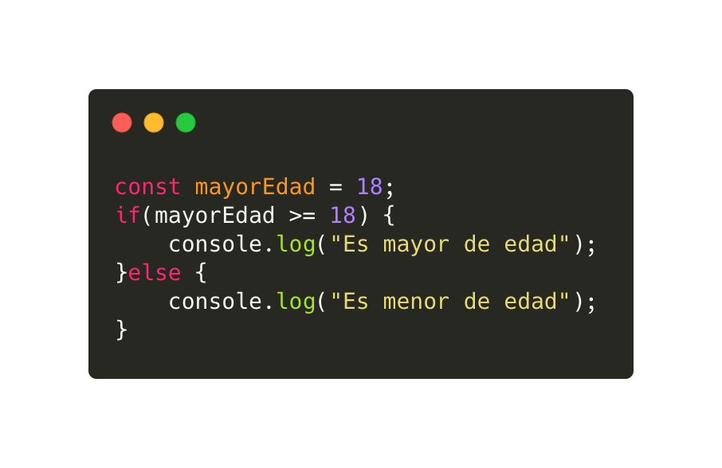
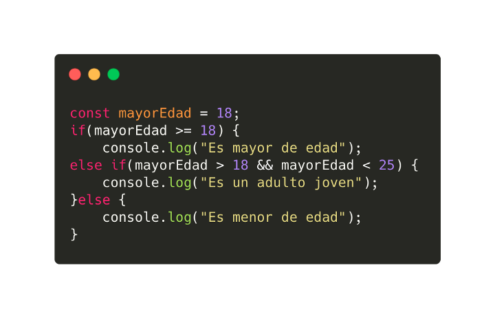
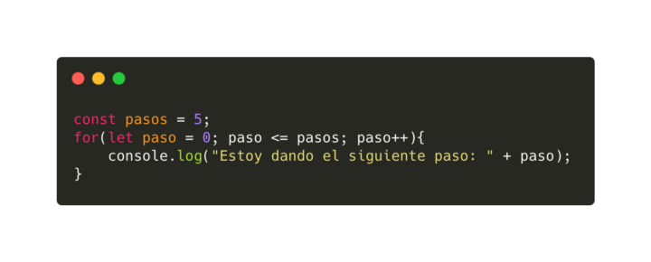
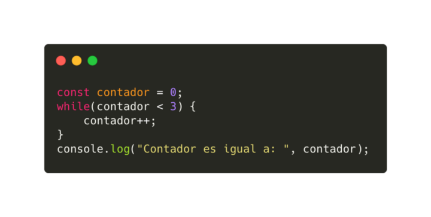
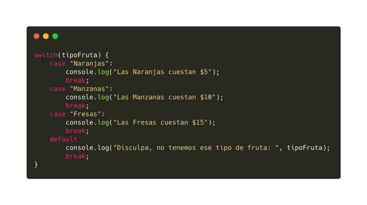

Preguntas:
1) ¿Qué versiones de JavaScript hay en el mercado?.
2) ¿Cómo se integra JavaScript a HTML?.
3) ¿Cómo es el manejo de las variables, tipos de datos y expresiones regulares en JS?.
4) ¿Cómo son todas las formas de declaración de funciones en JS?.
5) ¿Cuáles son los operadores y conversión entre tipos?.
6) ¿Cuáles son las estructura de control de JS?.
7) ¿Qué es el objeto dom en JS? Y ¿Cómo trabaja?.
8) ¿Qué función tiene en JS el Object Map?.
9) ¿Cuáles son todos los eventos que trabaja JS?.
10) Con toda la investigación que generaron deben de generar un formulario que realice las
siguientes funciones.
a. ¿Qué obtenga los datos del input?.
b. ¿Qué verifique los datos que se ingresan en el input?.
c. ¿Qué el formulario presente una calculo de sumatoria para validar ¿Qué no sos
un robot”?.
Respuestas:
1)Las versiones de Js son:
- version de JavaScript Version del navegador
- JavaScript 1.0 Navegador 2.0
- JavaScript 1.1 Navegador 3.0
- JavaScript 1.2 Navegador 4.0-4.05
- JavaScript 1.3 Navegador 4.06.4.7x
- JavaScript 1.4 n/a
- JavaScript 1.5 Navegador 6.0, Mozilla 0.6x-0.9x (Navegador de codigo abierto)
- JavaScript 1.6 Mozilla Firefox 1.5
- JavaScript 1.7 Mozilla Firebox 2
2) Para integrar JavaScript a HTML existen tres formas para hacerlo una de las formas seria:
a)Hacer un nuevo documento en la carpeta donde tenes el index y style, este documento tiene que llevar el nombre que quieras un ejemplo seria "nuevodocum.js" es importante que diga js si no, no se va a crear y despues en el index dentro de body tenes que poner "script src"nuevodocum.js".
ejemplo de como seria:


b)Para hacer la segunda inserccion de js en html seria que en una etiqueta tienes que poner en la etiqueta "onclick" = "alert" y lo que quieras poner un ejemplo seria Hola mundo.

c)Para la ultima inserccion lo que hay que hacer es que dentro del html tenes que poner "script" "/script" y dentro del script tenes que poner el codigo que quieras o el mensaje.

3) Manejo de variables en JS:
Las variables se pueden declarar usando var, const o let. Var tiene alcance de funciones, mientas que const y let tiene alcance de bloque, las variables de const no pueden ser reasignada, mientas que la variables let si pueden reasignada.
Manejo de tipos de datos en JS:
En JS existen 7 tipos de datos que estos son:
- String Cadenas de texto.
- Number Valores numéricos.
- Boolean Representa una entidad lógica y puede tener dos valores: true y false.
- null Es un valor asignado tiene el valor de “no valor”.
- undefined Una variable a la que no se le ha asignado ningún valor tiene el valor undefined.
Manejo de expresiones regulares en JS:
Las expresiones regulares son patrones utilizados para encontrar una determinada combinación de caracteres dentro de una cadena de texto. Las expresiones regulares proporcionan una manera muy flexible de buscar o reconocer cadenas de texto. Las expresiones regulares se utilizan con los métodos RegExp test() y exec() y con los métodos de String , match() , replace() , search() y split() .
4) Las formas de declaracion de funciones en JS es:
- Function declaration.
- Function expression.
- IIFE (Immediately Invoked Function Expression)
- Shorthand method definition.
- Arrow function.
- Generator function.
- Function constructor.
5) En JavaScript se urilizan 3 tipos de conversiones:
ToString:
Ocurre cuando se muestra algo. El String se realiza con "string(value)".
ToNumber:
Ocurre en operaciones matematicas. El number se realiza con "number(value)".
ToBoolean:
Ocurre en operaciones logicas. El boolean se realiza con "boolean(value)".
Operadores:
Los operadores permiten manipular los valores de las variables, realizar operaciones matematicas con los valores de las variables y comparar diferentes variables.
Tipos de operadores:
Asignacion:
Este operador se utiliza para gusrdar un valor especifico dentro de una variable. Ejemplo: "var num1 = 3;"
Incremento y decremento:
Estos operadores solo son validos para variables numericas y se utilizan para aunmentar o restar en 1 el valor de una variable. El incremento se indica con el prefijo "++" y el decremento con el prefijo "--".
Ejemplo: var num1 = 3;
++num1;
alert(num1);
var num2 = 3;
++num2;
alert(num2);
Logicos:
Los operadores logicos son sumamente necesarios para realizar operaciones complejas, ya que se utilizan para tomar decisiones sobre las instrucciones que deberia ejecutar el programa en funcion a ciertas condiciones.
Negacion:
Se utiliza para obtener el valor contrario al valor de una variable. Ejemplo:var visible = true;
alert(!visible);
AND:
La operacion logica AND obtiene sus resultados combinando dos valores booleanos. El operador se indica con dos && y el resultado solamente sera true si los 2 valores son true. Ejemplo:var valor1 = true;
var valor2 = false;
resultado = valor1 && valor2; //el resultado el "false".
var valor1 = true;
var valor2 = true;
resultado = valor1 && valor2; //el resultado el "true".
OR:
El operador OR funciona de la misma manera que el operador AND pero este tiene la caracteristica de que el resultado sera true si alguno de las 2 valores es true. Tambien este se identifica con 2 palos "||" Ejemplo:var valor1 = true;
var valor2 = false;
resultado = valor1 || valor2; //el resultado el "true".
var valor1 = false;
var valor2 = false;
resultado = valor1 || valor2; //el resultado el "false".
Matematicos:
Permite ralizar operaciones matematicas sobre el valor de las variables numericas. Los operadores que maneja son suma(+), resta(-), multiplicacion(*), division(/), modulo(%). Ejemplo:var num1 = 10;
var num2 = 5;
resultado = num1 + num2;//resultado 15
resultado = num1 - num2;//resultado 5
resultado = num1 * num2;//resultado 50
resultado = num1 / num2;//resultado 2
resultado = num1 % num2;//resultado 0
Relacionales:
Los operadores relacionales estan definidos casi de la misma manera que los operadores matematicos: mayor que (>), menor que (<), mayor o igual (>=), menor o igual(<=), igual que (==), distinto que (!=). Ejemplo:var num1 = 5;
var num2 = 10;
resultado = num1 > num2;//resultado "false"
resultado = num1 < num2;//resultado "true"
resultado = num1 >= num2;//resultado "true"
resultado = num1 <= num2;//resultado "true"
resultado = num1 == num2;//resultado "true"
resultado = num1 != num2;//resultado "false"
6) Estructura de control de JS:
Las estructuras de control de flujo, son intrucciones que nos permiten evaluar si se puede cumplir una condición o no, incluso nos puede ayudar a evaluarla n cantidad de veces.
Las estuctura de control son las siguientes:
if:
la estructura más utilizada en JavaScript y en la mayoría de lenguajes de programación es la estructura if . Se emplea para tomar decisiones en función de una condición. Su definición formal es: if(condicion) { ... }, Los condicionales nos permiten evaluar si una condición cumple o no con lo que estemos evaluando. Su sintaxis es muy sencilla, podemos evaluar si la condición es verdadera o falsa. Incluso añadir una condición intermedia en el caso de que no se cumpla la primera condición y se deban evaluar más.


ciclos, bucles o loops:
Se le pueden llamar, ciclos, bucles o loops, en ellos se evalua una condición n veces hasta que esta se cumpla. En estos podemos encontrar los for, while, entre otros.
for:
Un bucle for se repite como mencione hasta que la condición que se esta evaluando se cumpla.

while:
Ejecuta una sentencia mientras la condición que se este evaluando sea verdadera.

switch:
Permite evaluar una expresión e intenta igual el valor de esa expresión a una etiqueta llamada case, que es el caso a evaluar. En el caso de que la condición se cumpla o lo que tiene el case, se ejecuta la sentencia que este en ese caso. En el switch se usa una sentencia llamada “break”, esta nos permite salir de la condición que se esta evaluando.

7) El objeto dom es:
DOM significa Document Object Model, en español sería Modelo de Objetos del Documento. Es una interfaz de programación que nos permite crear, cambiar, o remover elementos del documento. También podemos agregar eventos a esos elementos para hacer más dinámica nuestra página.
El DOM representa un documento HTML completo como un solo objeto. Para crear el DOM, el navegador web que lee el archivo HTML toma todas sus partes, desde el elemento "html" raíz hasta las etiquetas "span" más pequeñas, y las devuelve como un objeto que el JavaScript comprende.
8) object map js: El map() te permite iterar sobre un arreglo y modificar sus elementos utilizando una función callback. La función callback se ejecutará entonces en cada uno de los elementos del arreglo.
El método map() crea un nuevo array con los resultados de la llamada a la función indicada aplicados a cada uno de sus elementos.
9) Tipos de eventos:
- Onblur Un elemento pierde el foco
- Onchange Un elemento ha sido modificado
- Onclick Pulsar y soltar el raton
- Ondblclick Pulsar 2 veces seguidas con el raton
- Onfocus Un elemento obtiene el foco
- Onkeydown Pulsar una tecla y no soltarla
- Onkeypress Presionar una tecla
- Onkeyup Soltar una tecla pulsada
- Onload Pagina cargada completamente
- Onmousedown pulsar el boton del raton y no soltarlo
- Onmousemove Mover el raton
- Onmuseout El raton sale del elemento
- Onmuseup Soltar el boton del raton
- Onreset Inicializar el formulario
- Onresize Modificar el tamaño de la ventana
- Onselect Seleccionar un texto
- Onsubmit Enviar el formulario
- Onunload Se abandona la pagina